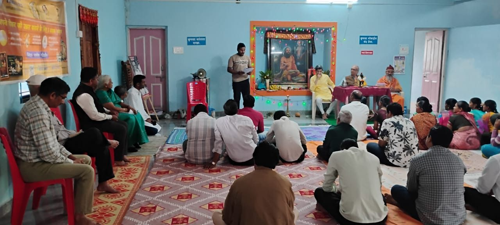
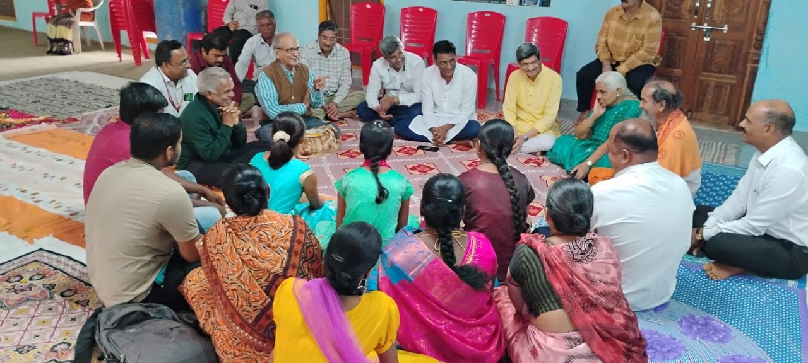

To create a compassionate and inclusive support system that strengthens deserving and needy members of society and enables them to move towards dignity, independence and self-reliance.
The philosophy of ADHAR-VAD is rooted in Bharatiya Sanskriti and in the values of reverence, affection, faith, compassion and confidence. "ADHAR" represents support and a place of trust, while "VAD", the Banyan tree, represents continuous growth and the creation of enduring support for others.


ADHAR-VAD was established to provide meaningful support to deserving and needy persons, irrespective of age, gender, caste, religion or other social distinctions. Depending on what each beneficiary needs, we offer financial, emotional, moral and guidance-related support.
The Trust is a not-for-profit charitable organisation. Its resources go towards its stated charitable objects and are administered in accordance with the Trust Deed and applicable law.
The principal objectives recorded in the Trust Deed.
ADHAR-VAD was registered with a clear commitment to turn its charitable objectives into practical support for deserving members of society.
Retired teacher Mr. Kulkarni recommended 12 to 15 students in genuine need. Adv. Ajay Shah and Mr. Vishal Joshi interviewed each student to understand their educational background, aspirations and financial circumstances. Five students were shortlisted for assistance.
We plan to expand educational assistance, strengthen guidance and support for senior citizens and women, develop community partnerships and create measurable, sustainable impact.
Prioritising genuine need and deserving cases.
Treating every beneficiary with respect and sensitivity.
Helping beneficiaries progress towards self-reliance.
Extending support without discriminatory barriers.
Keeping documented processes for selection and assistance.
Keeping activities and expenditure aligned with the Trust's objects and the law.
At least 60% marks in the SSC Board (or equivalent) examination and at least 55% in each of the two preceding years of schooling.
Annual income of parents or guardian below ₹2,00,000.
Up to the tuition fee payable by the student, as approved by the Board of Trustees.
Structured scholarships and tuition-fee assistance.
Counselling, career guidance and exposure to professional pathways.
Financial, medical, advisory and day-to-day support.
Guidance, counselling and pathways towards independence.
Support for cases needing medical guidance or rehabilitation.
Assessed help for persons with no reliable support.
Teachers, professionals and volunteers who identify needs and help.
Tracking applications, assistance and outcomes for transparency.
The Trust is administered by a Board of Trustees, with roles including Managing Trustee, Secretary and Treasurer.
Trustee
Trustee
Retired Teacher · Community Partner